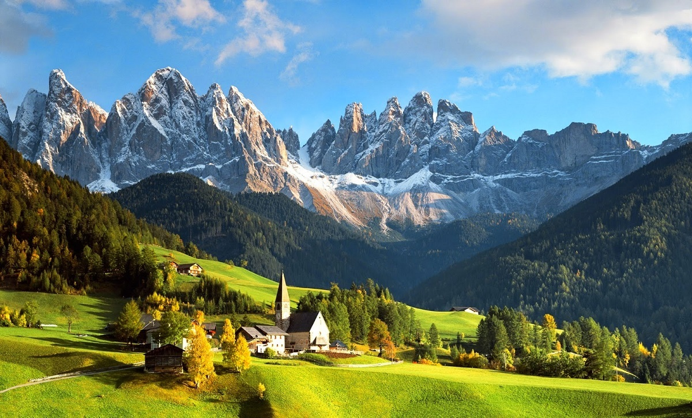
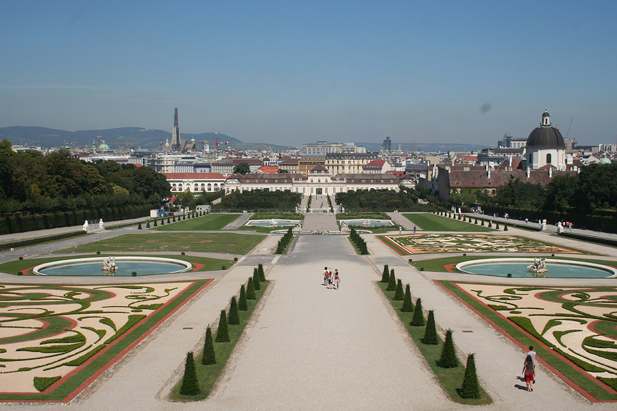

Страны Европы |
|---|
АвстрияАвстрия - полная официальная форма: Австри́йская Респу́блика (Republik Österreich) — государство в Центральной Европе. Население 8,46 миллиона человек. Столица — Вена. Государственный язык — немецкий. Федеративное государство, парламентская республика. Подразделяется на 9 федеральных земель (Бургенланд, Каринтия, Нижняя Австрия, Верхняя Австрия, Зальцбург, Тироль, Штирия, Форарльберг, Вена). На севере граничит с Чехией (362 км), на северо-востоке — со Словакией (91 км), на востоке — с Венгрией (366 км), на юге — со Словенией (330 км) и Италией (430 км), на западе — с Лихтенштейном (35 км) и Швейцарией (164 км), на северо-западе — с Германией (784 км). Австрия — одна из богатейших стран мира. ВВП на душу населения около 46 330 долларов США (в 2012 году). Денежная единица — евро. Член Организации Объединённых Наций, Европейского союза. В 1955 году провозгласила постоянный нейтралитет и неприсоединение к каким-либо военным блокам. Достопримечательности страныПарк БельведерСоздание этого огромного и очень красивого парка вкупе с дворцовым комплексом был инициативой принца Евгения Савойского. По его указу французский архитектор Доминик Жирар разбил здесь альпийские сады с живыми изгородями, фонтанами, зеркальным расположением деревьев, скульптурами и водными каскадами, а австрийский инженер Иоганн Лукас фон Гильденбрандт спроектировал два прекрасных дворца в стиле барокко – Верхний и Нижний Бельведеры, оранжерею, Парадные конюшни для скакунов принца и даже зоопарк, который до наших времен, увы, не дожил. Все остальное прекрасно сохранилось и может быть досконально изучено и осмотрено на экскурсиях. |